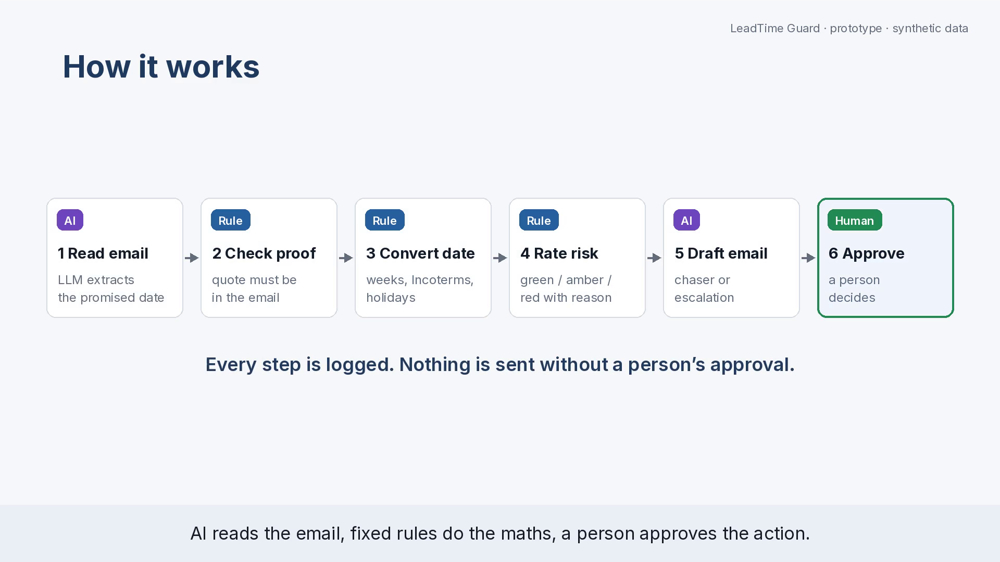
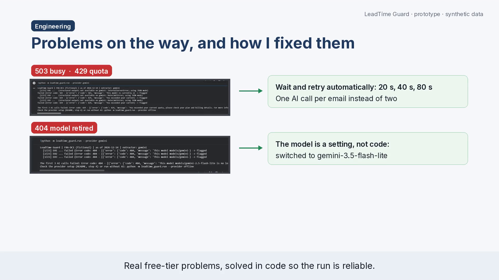

An AI agent that catches late long-lead equipment (transformers, switchgear, generators) on data-centre builds before it delays power-on. It reads supplier emails, turns vague dates like “CW 6 at our Milan works” into real on-site dates, rates every item green / amber / red with a reason, and drafts follow-ups that a person approves.
AI reads. Rules decide. A person approves.
3-minute walkthrough: the problem, how it works, the real AI run in Google Colab, the errors and fixes, and the results.

| Extractor | Missed risks (of 14) | Right colour | Dates read correctly |
|---|---|---|---|
| Keyword baseline (no AI) | 2 | 88 % | 82.6 % |
| AI (free Gemini model) | 0 | 96 % | 100 % |
The baseline fell for a superseded date and a partial shipment; the AI caught both. Every evidence sentence was found in its email. Final register: 4 red 11 amber 10 green

Supplier emails contain prices and contract terms. For real data, the AI step runs on a local or on-premise model (Ollama, vLLM, LM Studio), so no email text leaves the company network. Rules, report, drafts and dashboard already run locally. The public demo uses synthetic data only.
Python · LLM APIs (Gemini) or local models (Ollama) · Pydantic · pandas · YAML rules · openpyxl · Streamlit · pytest · n8n (optional scheduling)